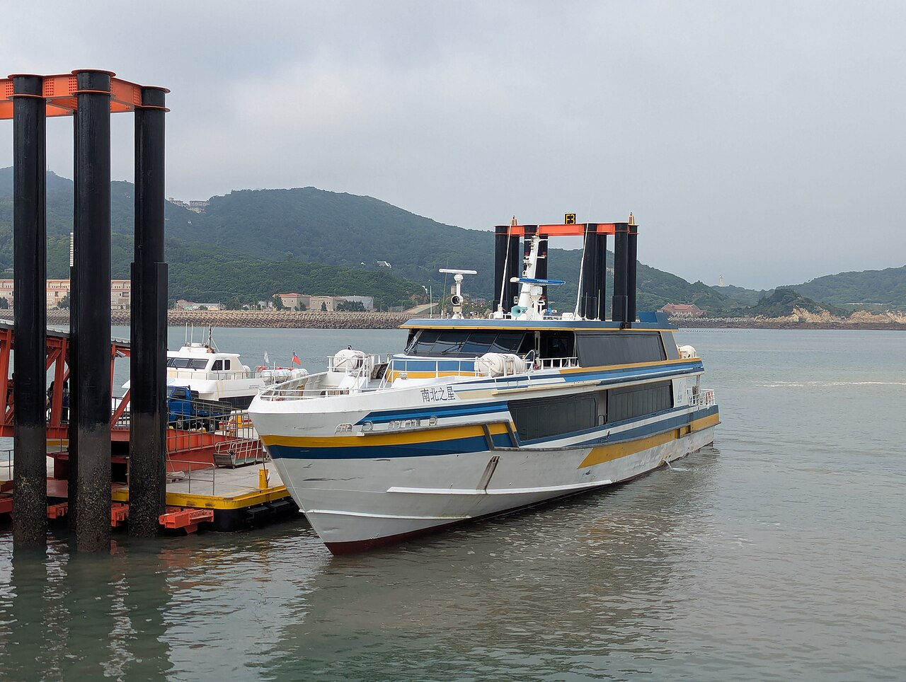
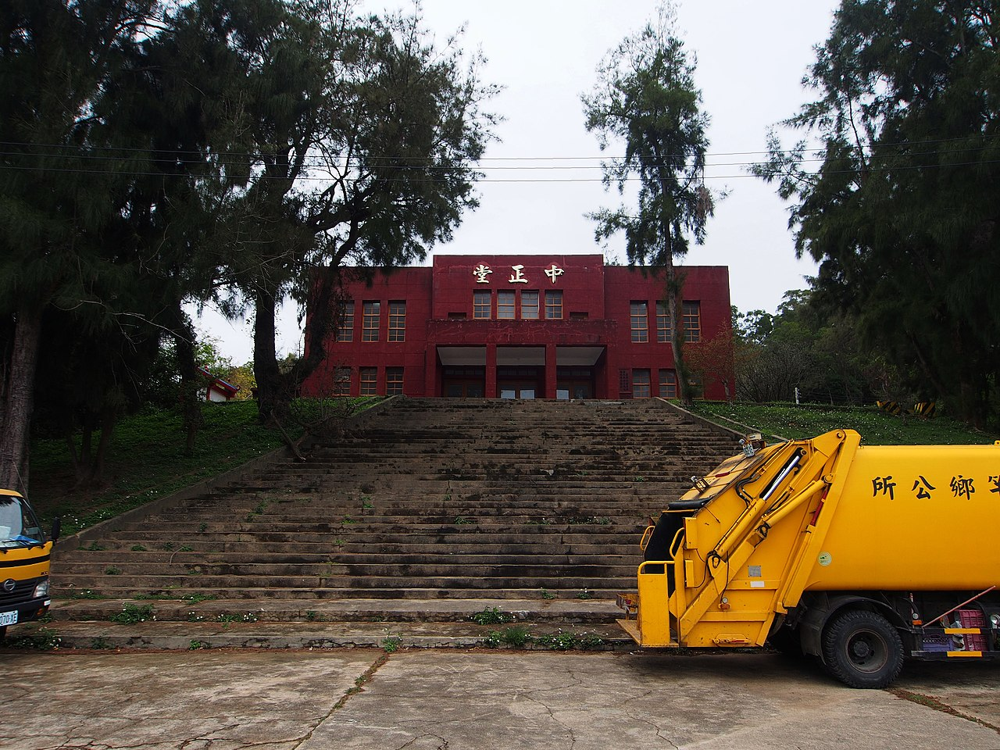
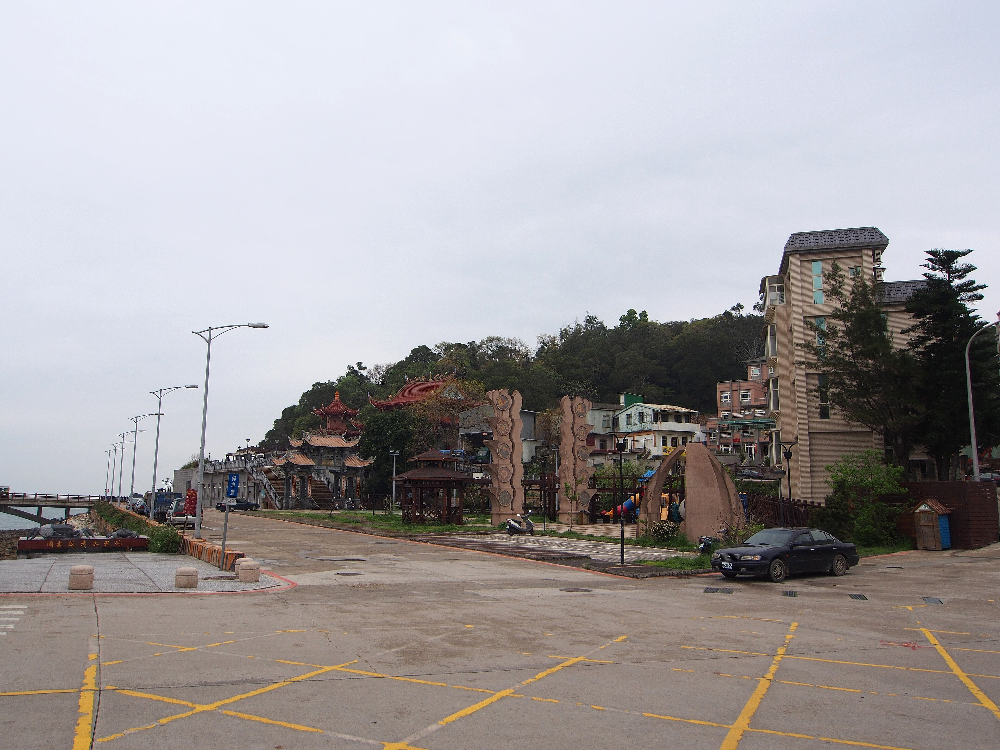
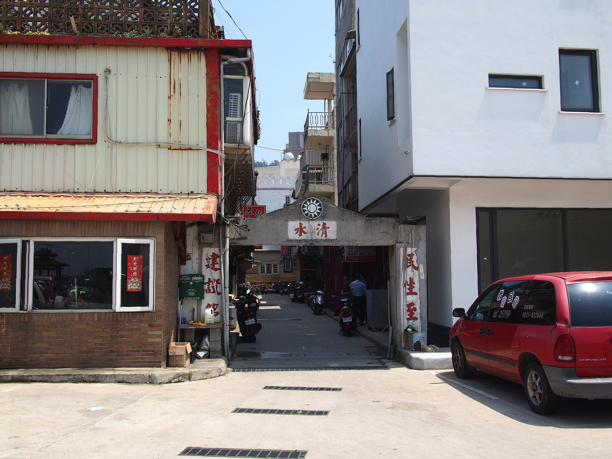
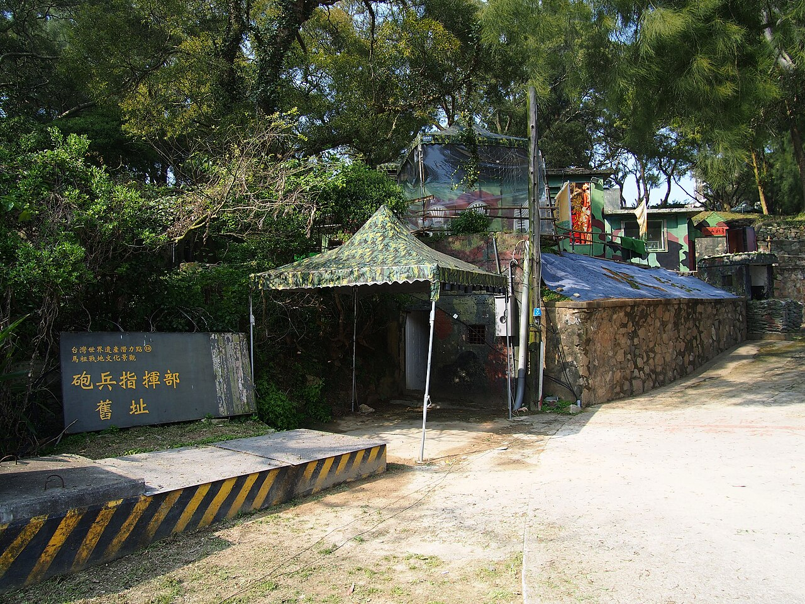
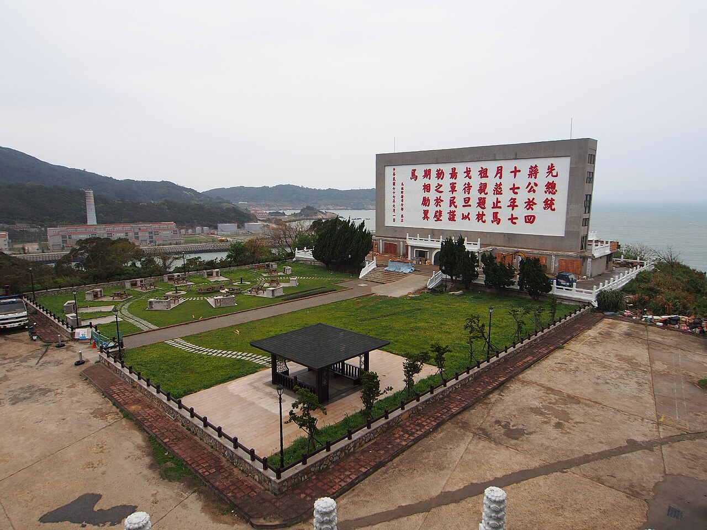
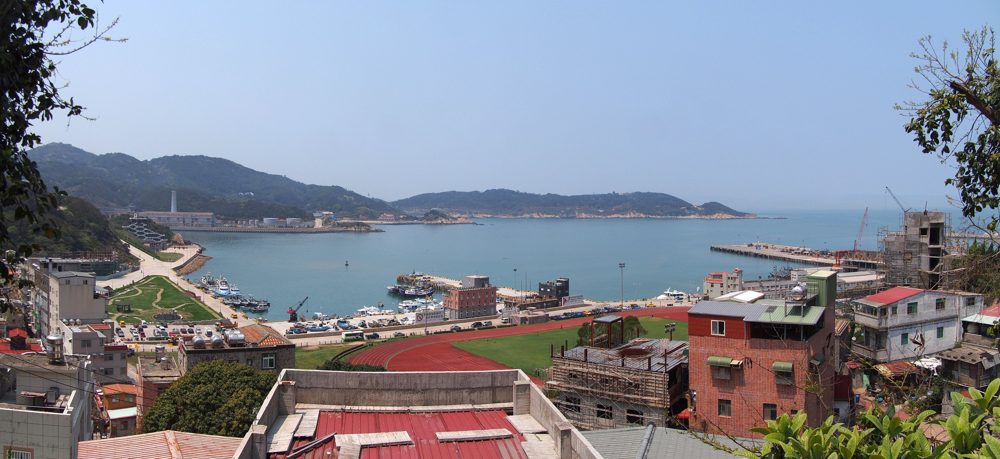
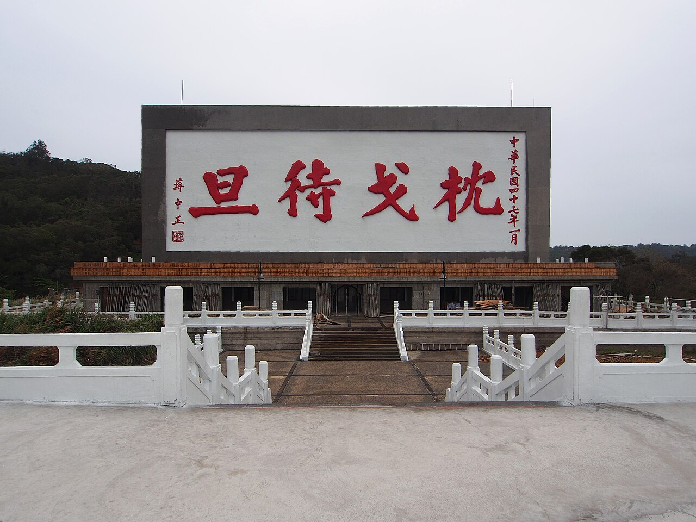
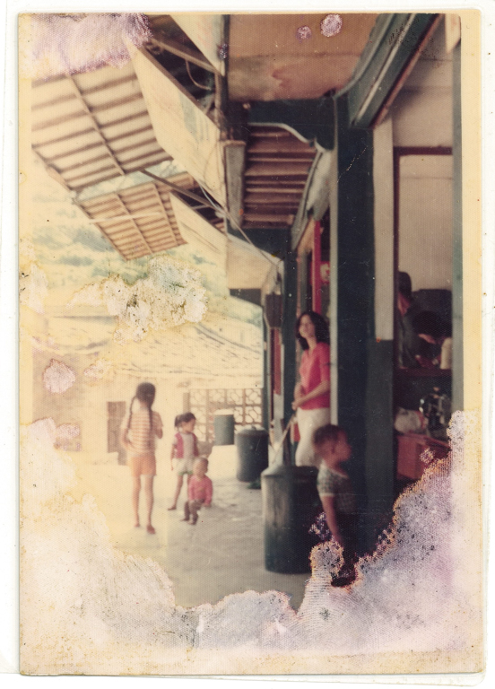
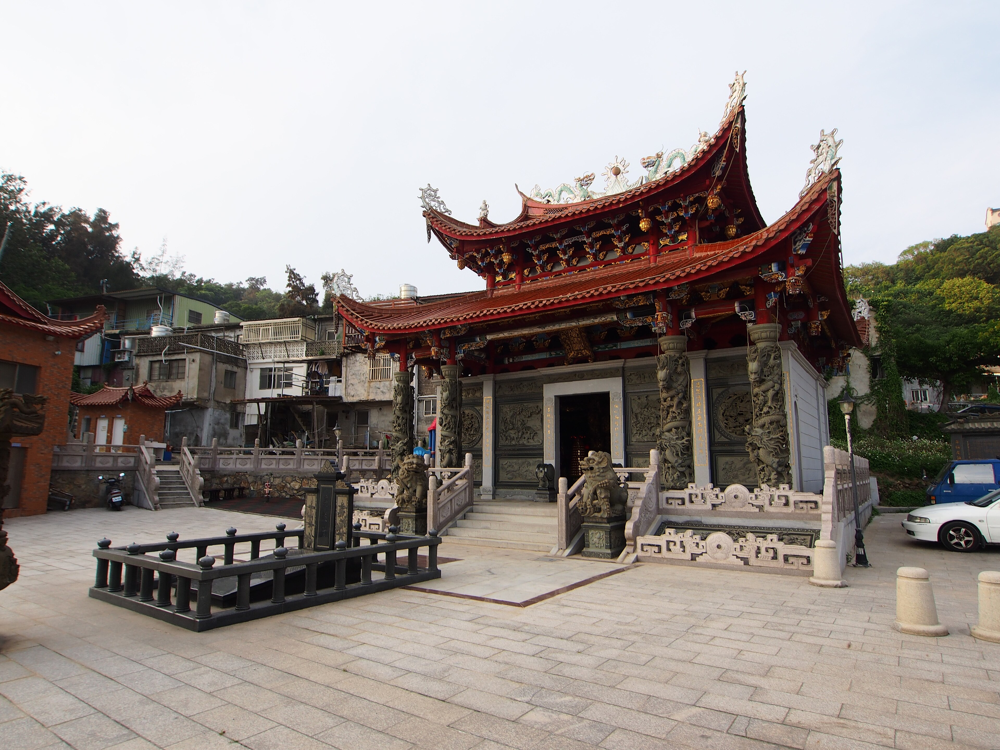

Fuao Harbor 福澳港 2025-09-13.jpg

作者：Terry850324 · CC BY-SA 4.0 · 原始檔案與授權紀錄 · 下載本版參考照片
以可重用實拍照片製作的遊戲化重建，距離與配置經壓縮。清水牌樓參考 2015 年；梅石中正堂採 2014 年歷史外觀，不代表現在已改建的藝文中心。其餘標有「示範」的招牌不代表真實店家。
照片貼圖以 UV 範圍擷取立面與文字，未使用 AI 補字。重建模型為人工簡化，並非攝影測量。使用的照片與改作遵循各項授權，作者不為本遊戲背書。

作者：Terry850324 · CC BY-SA 4.0 · 原始檔案與授權紀錄 · 下載本版參考照片





基於上述照片製作的地標幾何／貼圖配置：RELETTER，2026，CC BY-SA 4.0。下載地標重建原始碼。本頁不是現地導航。



胡氏家族提供；連江縣政府文化處建檔 · CC BY 3.0 TW + · 原始照片與授權。木造雨庇與裙板的局部貼圖；歷史照片，不代表現況店家
海洋波浪核心：Humpalumps / Ultra-Water，MIT 授權。此遊戲使用降低解析度的改作版本。
士兵館幾何參考使用者提供的五張照片，以及連江縣文化處 2023 士兵空間配置與電梯設備清單。未取得現況測繪尺寸，位置、樓層落差及電梯運行為遊戲化推估；士兵館另使用使用者提供照片中的水泥柱局部，未把地圖介面放上牆面。
水泥、柏油、石牆、林地與葉片使用 Poly Haven CC0 資產；這些是通用表面素材，不是南竿拍攝。逐項檔案與來源。南竿實景外牆仍使用上列已署名照片。
福澳、清水與梅石的實景照片更新為最大寬度 2560 像素的授權縮圖。一般建築的街道正面採等比例照片局部，側面改為水泥實體牆、窗框、鐵窗與陽台，避免同一張照片包覆四面牆。照片仍在同區多棟填充建築間重用，並非每棟不同地址的測繪復原；通用材質與推估建築不冒充現地逐棟實拍。士兵館水泥柱局部使用使用者提供的參考照片。

rheins · CC BY 3.0 · 原始照片。使用廟宇旁老屋的水泥、窗戶、鐵窗與陽台立面裁切，重用於梅石填充建築；1970 年代照片保留作歷史參考，已移除一般房屋上的重複雨庇貼圖。